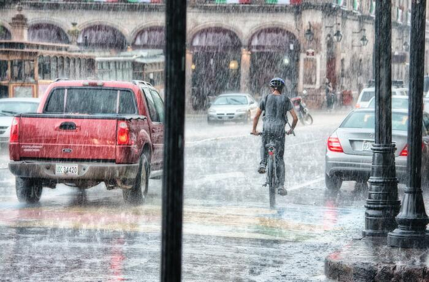

Welcome to Rain or Shine USA
Flooding in Bear Lake County
By Dottie Do-Good
 This past weekend saw record rainfall in Bear Lake County. Idaho gets 15 inches of rain on average each year. The wettest month of the year is May which accumulates an average of 1.9 inches of rain over the course of the entire month. Yet over the last weekend Bear County saw 2.5 inches of rain over three days. This led to substantial flooding throughout the lowlands of the county. The flooding caused several of Fish Haven's creeks to run over their banks. While businesses along Preston's State Street had to shut down. Preston High School also reported damage from the storm. Several power lines were damaged causing outages to several residents in parts of Preston. PacifiCorp has assured the public that they have utility crews are working around the clock to restore power. The city council is coordinating efforts for clean up. If you would like to assist in clean up, please see the city's webpage for more information.